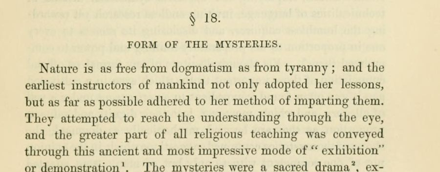

“The mysteries were a sacred drama” (vol. II, § 18, pp. 115–116)
English: London 1850, vol. II, ch. V (“On the theory of mediation”), § 18, scan n126–n127. Mackay’s footnote markers omitted. Highlighted: the words that fit Lecky’s claim.

Nature is as free from dogmatism as from tyranny; and the earliest instructors of mankind not only adopted her lessons, but as far as possible adhered to her method of imparting them. They attempted to reach the understanding through the eye, and the greater part of all religious teaching was conveyed through this ancient and most impressive mode of “exhibition” or demonstration. The mysteries were a sacred drama, exhibiting some legend significant of Nature’s change, of the visible universe in which the divinity is revealed, and whose import was in many respects as open to the Pagan as to the Christian. Beyond the current traditions or ἱεροὶ λόγοι of the temple, few explanations were given to the spectators, who were left, as in the school of Nature, to make inferences for themselves.
[Mackay’s note 2, p. 115:] … The mysteries consisted seemingly of two parts, the scenic exhibition, and a commentary on it …
The rest of Lecky’s note, that the gladiatorial games were of Etruscan origin and were first held at graves in honour of the dead, is not on these pages.
Further down the rabbit hole
Sources that Lecky cites in the notes next to the ones that cite this page.
- Concina, Adversus usuram and De spectaculisA Dominican against interest and against the stage: the pope’s own polemicist
- Bossuet, Maximes et réflexions sur la comédieWhy the Church refused actors communion and Christian burial
- Lebrun, Discours sur la comédieWhy actors were buried at night, without priest or prayer
- Riccoboni, Histoire du théâtre italienAn Italian actor claims Tartuffe and Harlequin for Italy
- Storch, Cours d’économie politiqueA tutor to the Russian grand dukes on usury laws that backfire
- Strutt, Horda Angel-cynnan; or, the Manners and Customs of the Inhabitants of EnglandGod on the upper stage and the Devil at Coventry: an antiquary’s view of old England


Backlinks
Every place in Rationalism in Europe that links to this page (generated automatically when the site is built).
- Chapter VI: note 115